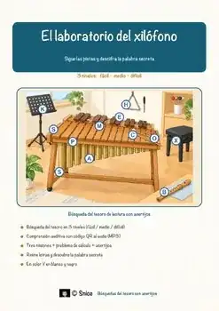

Todos los recursos
Busca un tema o filtra por materia y grado. Cada página de recurso lleva directamente al producto en mi tienda de TpT.
1.659 recursos
Materia
Grado

«El laboratorio de pan de jengibre: Geometría entre moldes, medidas y casas» – Búsqueda del tesoro de lectura

«Luz y energía en invierno» – Búsqueda del tesoro de lectura

«Sal sobre el hielo» – Búsqueda del tesoro de lectura

Juego de roles multiplicación y división | Panadería de Navidad Grado 2

«Aventura de conteo con castañas» – Búsqueda del tesoro de lectura

«Viaje por el corazón» – Búsqueda del tesoro de lectura

«Fiestas de las religiones» – Búsqueda del tesoro de lectura

«La ciencia de la fogata» – Búsqueda del tesoro de lectura

«La vida en un poblado celta» – Búsqueda del tesoro de lectura

«Dentro de una hormiga» – Búsqueda del tesoro de lectura

«El viaje del salmón río arriba» – Búsqueda del tesoro de lectura

«El misterio del maíz» – Búsqueda del tesoro de lectura

«El lince al acecho» – Búsqueda del tesoro de lectura

«El viaje otoñal de la grulla» – Búsqueda del tesoro de lectura

«El secreto del hongo rojo» – Búsqueda del tesoro de lectura

«La liebre hecha para escapar» – Búsqueda del tesoro de lectura

«El tiburón cazador» – Búsqueda del tesoro de lectura

«El misterio de la salamandra» – Búsqueda del tesoro de lectura

«Anatomía del oso pardo» – Búsqueda del tesoro de lectura

«El zorro y su anatomía» – Búsqueda del tesoro de lectura

«Dentro de una mina de lignito» – Búsqueda del tesoro de lectura

«El secreto de la grúa torre» – Búsqueda del tesoro de lectura

«Viaje al agua subterránea» – Búsqueda del tesoro de lectura

«El secreto del manzano» – Búsqueda del tesoro de lectura

«El laboratorio del xilófono» – Búsqueda del tesoro de lectura

«Dentro de un encendedor» – Búsqueda del tesoro de lectura

«El poder de los meandros» – Búsqueda del tesoro de lectura

«Dentro del cerebro humano» – Búsqueda del tesoro de lectura

«Dentro de una refinería» – Búsqueda del tesoro de lectura

«Dentro de la célula animal» – Búsqueda del tesoro de lectura

«Dentro del hormiguero» – Búsqueda del tesoro de lectura

«Por dentro de un hueso» – Búsqueda del tesoro de lectura

«Artesanos de la Edad Media» – Búsqueda del tesoro de lectura

«El misterio del arcoíris» – Búsqueda del tesoro de lectura

«Cazadores de la Edad de Hielo» – Búsqueda del tesoro de lectura

«Secretos del parque nacional» – Búsqueda del tesoro de lectura

«El teatro de sombras» – Búsqueda del tesoro de lectura

«El laboratorio del aire» – Búsqueda del tesoro de lectura

«Viajes por mares desconocidos» – Búsqueda del tesoro de lectura

«La bomba de calor» – Búsqueda del tesoro de lectura

«Dinero inteligente en el mercado» – Búsqueda del tesoro de lectura

«¿Puede aprender una computadora?» – Búsqueda del tesoro de lectura

«Viaje por el intestino delgado» – Búsqueda del tesoro de lectura

«Programar sin computadora: Instrucciones claras paso a paso» – Búsqueda del tesoro de lectura

«Siluetas de papel» – Búsqueda del tesoro de lectura

«Lanzamientos con precisión» – Búsqueda del tesoro de lectura

«Superpoderes de la ardilla» – Búsqueda del tesoro de lectura

«Cómo responde tu cuerpo al frío» – Búsqueda del tesoro de lectura
No se encontraron recursos. Prueba con otra palabra o con otro filtro.